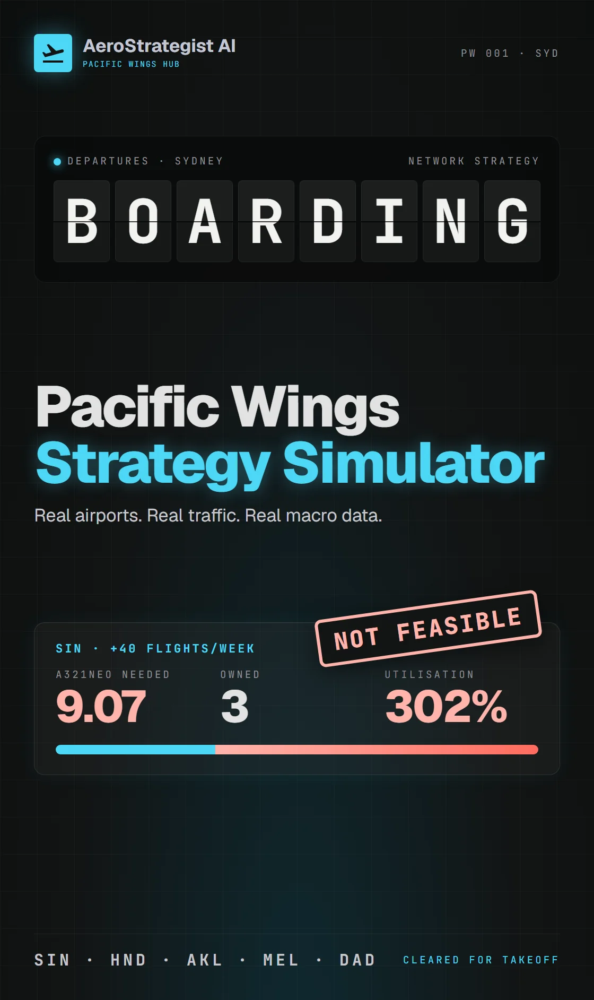
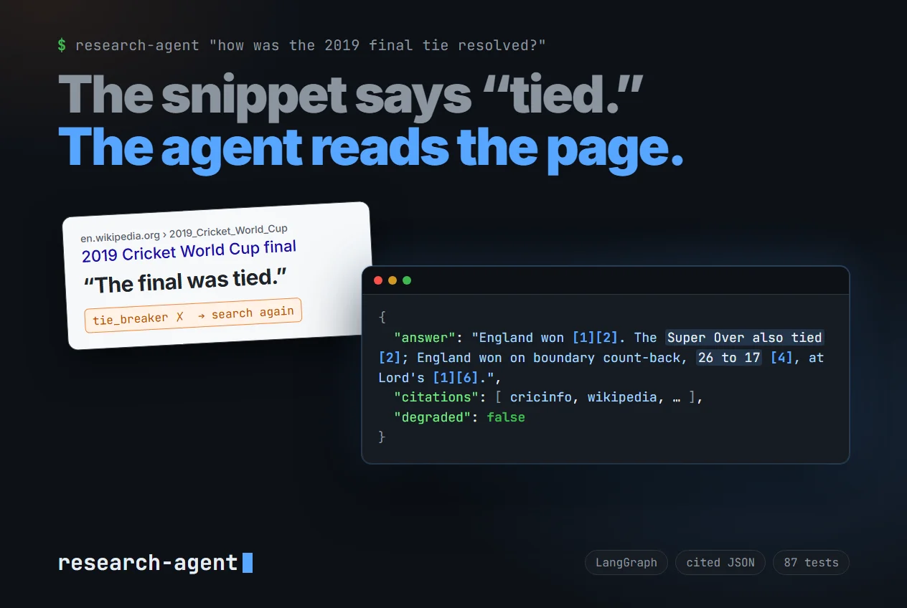
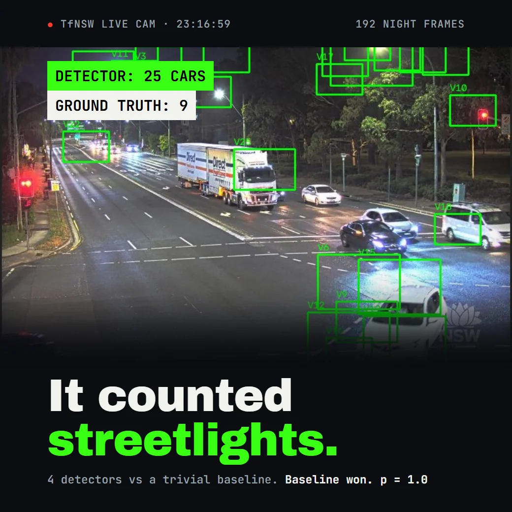
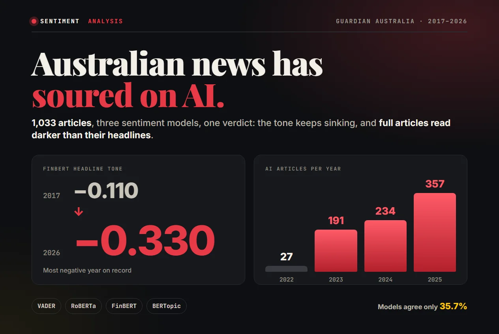

G'day, I'm
Tien Dung Vu
AI Engineer / Data Scientist
I build AI that does real work for real people: assistants that find answers in thousands of documents, models that forecast what's coming next, and the pipelines that put both live on AWS instead of leaving them on my laptop. I also try to break my own AI before anyone else can, because a chatbot that confidently makes things up is only funny until it's talking to your customers. Honestly, I still can't believe building this stuff counts as a job.
Nice to meet you
I'm an AI Engineer and Data Scientist with a degree in Artificial Intelligence, three AI internships across Australia and Vietnam, and a slightly unhealthy level of excitement about what this technology can do. I train models, test them properly, and then actually ship them: 10 AI services running live on AWS, an assistant that 50 HR staff and new starters use to get answers out of 700 policy documents, and daily data pipelines keeping the whole thing fed. My favourite moment in any project is when an AI tool stops being a cool demo and starts genuinely saving someone time. I'm just as happy talking to the people who'll use a tool as I am building it, which, it turns out, is the secret to building the right thing.
- I build AI people actually use, not demos that only work during the meeting
- I test my AI until it knows when to say "I don't know"
- I back the big calls with A/B tests and confidence intervals, not a gut feeling
- Based in Epping, NSW, with full work rights (no sponsorship needed) and ready for a full-time AI or data science role anywhere in Australia
Education
Bachelor of Artificial Intelligence, University of Technology Sydney, graded High Distinction. That's uni-speak for "lived in the library, and it paid off".
A few gold stars
Proof I paid attention in class, and kept learning once class was over.
Dean's List 2024
Recognised by UTS's Faculty of Engineering and IT for top academic results.
Dean's List 2025
Made the list again, just to prove 2024 wasn't a fluke.
AI Fundamentals: Foundations for Understanding AI
IBM, July 2026. The big-picture basics of how AI works and where it fits.
RAG for Enhanced AI Outputs
IBM, September 2026. How to make AI answer from your real documents instead of guessing.
What I bring to the table
No jargon, promise. Here's what I can actually do for your team.
Teaching computers to spot patterns
Models that learn from your data to sort, predict, and forecast. Which new starters might leave early? How many passengers are flying next March? Is this news story real or fake? I build the thing that knows, and cross-validate it so the answer holds up on data it has never seen.
AI assistants that actually help
Chatbots that answer questions from your own documents, AI researchers that show their sources, and teams of AI helpers that take a to-do list of repetitive tasks and just get on with it.
Keeping AI honest
AI can sound very confident while being very wrong. I grill my systems with trick questions, check every answer against its sources, and keep an eye on speed and cost, so you get an assistant you can trust with real customers.
Making sense of words, at scale
Reading thousands of articles, reviews, or documents so you don't have to, then pulling out the mood, the big themes, and the bits actually worth knowing.
Turning numbers into decisions
Power BI and Looker Studio dashboards people actually open, genuinely unreasonable Excel skills, and proper A/B testing with confidence intervals to find out what's really working, so the next big call rests on measured evidence, not a hunch.
Building things that don't break
A clever model is no use stuck on my laptop. I package my work with Docker, serve it behind FastAPI on AWS, and wire up automatic testing so every change gets checked before it ships, and it keeps running even when the internet is having a bad day.
3,000
Pages of policy my AI assistant reads, so staff don't have to
10
AI services I deployed live on AWS
50
HR staff and new starters using that assistant
229
Automated tests keeping my projects honest
Where I've put AI to work
Three AI internships, two countries, one recurring habit: finding the most repetitive, soul-draining part of someone's job and building something to do it for them.
-
AI Automation Intern, Affinity Marketing Australia (May 2026 - Present)
- Plugged Claude into the marketing team's live tools (n8n, HubSpot, and the campaign channels) so AI now handles the repetitive CRM, content, and advertising steps people used to do by hand.
- Shipped 4 end-to-end AI content pipelines that turn one piece of content into many: blogs into social posts, videos into ready-to-go content packs, and tired old ads into fresh ones.
- Built a generator that writes 15+ Google ad variants on demand, an A/B testing pipeline for email subject lines, and a weekly analytics summary that emails itself.
- Automated CRM data entry for 500+ contact records in HubSpot and cut formatting errors by 50%.
- Measured what was actually working across GA4, Search Console, Merchant Center, and Shopify, built Looker Studio reports and Excel what-if models to steer SEO and ad spend, then wrote the playbook so the team keeps it all running without me.
-
AI Engineer Intern, CMC Corporation Vietnam (Oct 2024 - Apr 2025)
Part of a 5-person team building an AI-powered system to make starting a new job a lot less overwhelming.
- Built ETL pipelines in Python and SQL that load 1,200+ HR and onboarding records into PostgreSQL every day, with schema checks and deduplication so the data could be trusted.
- Trained scikit-learn and XGBoost models to flag staff at risk of leaving, clustered employees into onboarding cohorts, and forecast how many new starters were on the way, so HR could plan ahead instead of scrambling.
- Built the AI layer: a retrieval assistant over 700 policy documents (around 3,000 pages) in a FAISS search index, letting 50 HR staff and new starters ask questions in plain English, plus name recognition in PyTorch and OCR that read 1,250 scanned documents.
- Deployed the trained models to AWS behind 10 FastAPI endpoints in Docker, A/B tested which onboarding changes genuinely helped and reported the lift with confidence intervals, and built Power BI dashboards so leaders could see how it was all going at a glance.
-
AI Engineer Intern, FPT Vietnam (Sep 2023 - Feb 2024)
- Built a GitHub Actions pipeline from scratch: every time someone changed the code, it got tested, linted, packaged into a Docker image, and shipped without anyone lifting a finger.
- Set up environment-specific secrets and release gates so every deployment went out with the right settings and credentials, instead of relying on someone remembering to do it by hand.
- Trained my first regression, decision tree, and clustering models on real datasets, learning the fundamentals everything since has been built on.
- Built a text classification model using word embeddings, my first taste of teaching a computer to read. I've been hooked ever since.
When I'm not building AI, I'm helping travellers as a Passenger Service Agent at Sydney Airport (OACIS, Oct 2025 - Present). Nothing teaches you to stay calm under pressure quite like a delayed flight and a terminal full of people who want answers.
Things I've built
The fun part. Some started as uni projects, some as real-world problems, and one because I wanted to run an airline without the paperwork. Open any project to see how it works, or explore everything on GitHub. There's more where these came from: a fake-news classifier I led a team of 5 to build, a movie-review sentiment model scoring 0.9531 AUC, and an iOS stock tracker with live price charts.

Pacific Wings Airline Strategy Simulator
What if you could run an airline without risking a real dollar? This platform scores routes to 159 airports worldwide using real BITRE aviation, World Bank, and competitor data, so strategy gets tested before anyone buys a plane.
Python, Next.js, XGBoost, LangGraph, Gemini AI
- Forecasts passenger demand to within 4.37% (R² of 0.997), and only ships a model that beats the baselines
- Monte Carlo risk engine stress-tests fuel shocks, tourism booms, and new rivals
- A team of 5 AI advisers writes the game plan, backed by 142 automated tests

AI Research Assistant
Ask it anything and it searches the web, reads the pages, and hands back an answer with real sources. Missing something? It goes back and looks again.
Python, LangGraph, Gemini, Docker
- Only cites pages it actually read
- Graded on a 25-question set, including knowing when to say "I don't know"
- 87 tests, plus guards against sneaky web pages
UFMO: Hunt by Sound
A Vision Pro game where sound waves, not sight, are your main guide. Built with UTS's Human Augmentation Lab.
Apple Vision Pro, Echolocation
- Led the text-to-speech (TTS) system
- A friendly AI voice guides you through
- Aim using echoes and your eyes

Traffic Congestion Analysis
Taught a computer to read NSW traffic cameras and tell how jammed the roads are. Led a team of 6 at UTS, owning the data collection, the preprocessing, and the scoring harness.
Python, OpenCV, PyTorch
- 192 live camera snapshots pulled from the TfNSW API
- Brightened dark footage 19% so the AI could see
- 4 detection methods scored head to head, with confidence intervals

How Aussie Media Feels About AI
My models collected 2,622 Guardian Australia articles, filtered them to the 1,033 really about AI (2017-2026), and read the lot to see how the news feels about it. For UTS and The Sydney Morning Herald.
Python, RoBERTa, FinBERT, BERTopic
- 3 AI models cross-checking each other's mood
- Found articles are gloomier than their headlines
- 6 recommendations delivered to the SMH
©2026 Tien Dung Vu. Template by DesignToCodes.